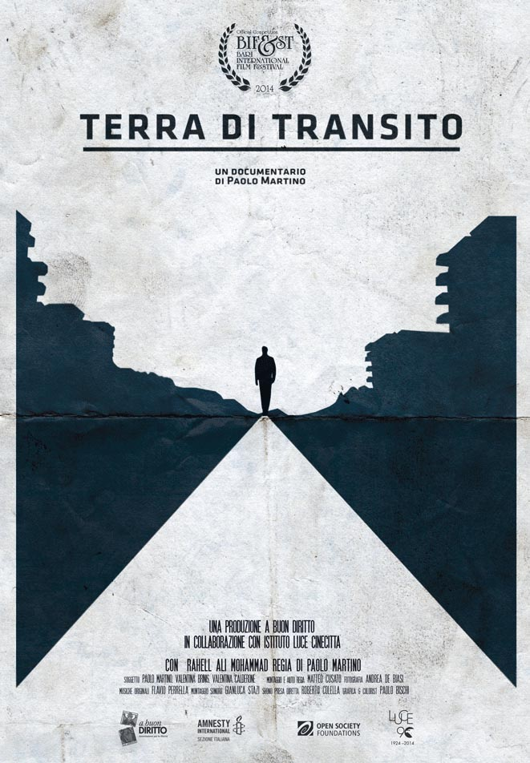

Mentre qualcuno prescinde completamente dai dati per ridurre la grave emergenza dei migranti ad una sfida tra opposte tifoserie, l’Italia è sempre più lontana tanto dall’Europa quanto dal Mediterraneo, riducendosi così, più che ad una terra di frontiera come prevede il trattato di Dublino, ad un pontile sospeso sul nulla dove nemmeno i disperati vogliono fermarsi. Ci mette di fronte a questa realtà il documentario _Terra di transito di Paolo Martino. Eppure, nonostante la situazione sia drammatica, le risposte ci sarebbero. Infatti, pur ammettendo che le capacità di accoglienza dignitosa degli altri paesi sono superiori, l’Italia potrebbe ritrovare slancio proprio con misure capaci di incrementare la produttività, quali il ripopolamento di zone ormai profondamente immiserite. Il problema vero però è che, se l’Europa comincia proprio a Lampedusa, la quale quindi non rappresenta soltanto un problema italiano, nelle nostre contrade sono ridotti allo stadio di immigrati anche coloro che ci abitiamo, e forse, ormai assuefatti al ruolo di estranei a se stessi, nemmeno si cerca di integrarsi più di tanto. Stefano Pasta, laureato in Storia contemporanea e pubblicista, recensisce il film di Paolo Martino con l’idea di accogliere la sfida del convivere per permettere così un futuro alle nostre città e dare forma ad un mondomisto interconnesso e interdipendente._
«Qui muoio ogni giorno», così un hazara afghano in fuga dalla persecuzione della sua etnia racconta la condizione dei richiedenti asilo bloccati dove non vogliono restare: in Italia. È la prospettiva spiazzante del documentario di Paolo Martino, Terra di transito, prodotto dall’associazione A Buon Diritto.
Parte dalla storia di Rahell, un curdo scappato da bambino dall’Iraq in Siria, quando nel 1988 Saddam Hussein ordinò un attacco chimico sulla città di Halabja. Nel 2010, costretto a lasciare Damasco, una nuova fuga, senza visti né passaporto, lo conduce in Europa, attraverso la Turchia e la Grecia, fino a Roma, da dove spera di raggiungere la Svezia per ricongiungersi con i suoi familiari. Ma all’arrivo in Italia, scopre che a dividerlo dalla sua meta c’è il regolamento di Dublino, legge europea che impone ai rifugiati di fare domanda di asilo e risiedere nel primo paese d’ingresso in Europa. Come per migliaia di coetanei, il “punto di non ritorno” nel suo progetto migratorio è il rilascio delle impronte digitali. Da lì, ogni tentativo di espatrio verso la meta desiderata si trasforma in un rinvio nel nostro Paese, quello che a cui la legge affida la competenza della pratica di Rahell ma che per lui è soltanto una Terra di Transito.
«Un luogo – spiega Paolo Martino – non per arrestare la lunga corsa, ma solo per tirare il fiato e poi portarsi avanti. L’Italia, un tempo meta ambita, è ridotta ormai a un luogo di attesa, di sosta indesiderata prima del salto al cuore d’Europa». Nella sua odissea personale, Rahell incontra altri ragazzi in fuga dall’Afghanistan, dalla Siria e dall’Iraq, bloccati, come lui, in un Paese che non vogliono e che spesso è incapace di accogliere e di garantire un percorso di vita autonomo alle persone che dovrebbe proteggere.
È raccontata un’Italia senza una legge organica sul diritto d’asilo e con un sistema d’accoglienza fondato sull’emergenza e l’improvvisazione. Centri che ospitano centinaia di persone, poca attenzione all’insegnamento dell’italiano e quasi nessun percorso d’inserimento lavorativo. «Siamo costretti a mangiare nelle mense delle chiese, camminiamo tutto il giorno, passiamo il tempo nelle stazioni dei treni», spiega un ragazzo che dorme nella “tensostruttura di prossimità di transito afghani”, realizzata nel febbraio 2012 nel quartiere Tor Marancia di Roma per i rifugiati che dormivano nel piazzale della Stazione Ostiense. Nella tensostruttura, nota come “il tendone degli afghani”, sono ospitate anche persone senza documenti, tra cui si distinguono due categorie, “i transitanti” e “i dublinati”.
La prima comprende chi si definisce in transito, ovvero persone che si riposano per qualche giorno, cercando di sfuggire ai controlli di polizia, per poi ripartire alla volta del Nord Europa. La seconda, invece, include sia le persone rimandate in Italia, in quanto Stato competente all’esame della loro domanda di protezione, sia chi deve essere trasferito dall’Italia in un altro Stato europeo dove è già avvenuta l’identificazione. Spesso è la Grecia: secondo Medici per i diritti umani, nel 2013 l’Italia ha rimandato nel paese ellenico tre migranti al giorno.
Nei racconti degli ospiti del “tendone”, l’assenza italiana di quella protezione che spetterebbe ai rifugiati, stride con l’accoglienza scandinava e nordica. «Qui ti aiutano a fare un piano», spiega lo zio di Rahell, da anni in Svezia, elencando i sussidi economici ricevuti, i corsi di formazione obbligatori, l’aiuto per la casa e il lavoro, l’assistenza sanitaria e legale. Si potrebbe pensare che l’Italia, in quanto paese di sbarchi, sopporti dei numeri di richiedenti asilo molto maggiori rispetto agli altri stati europei, ma non è così. La Germania accoglie attualmente 572 mila rifugiati, la Francia 220mila, l’Italia appena 58mila. Ma queste nazioni – che offrono sì un trattamento migliore – sono le stesse che hanno promosso il regolamento di Dublino, che sfavorisce gli stati di frontiera (Grecia, Italia e Spagna). È in fondo proprio quest’accordo europeo il grande protagonista del documentario.
Giunto al venticinquesimo anno di vita e alla sua terza versione (Dublino III è entrato in vigore da pochi mesi), per il regista «ha mostrato tutta la sua iniquità», per esempio impedendo di ricongiungersi con la famiglia che già vive in uno Stato e accentuando così l’insicurezza delle persone in fuga che potrebbero invece contare sulla rete familiare. Visto dal tendone di Tor Marancia, il regolamento di Dublino è un paradosso. È l’immagine di un’Italia travagliata dalla crisi, inerte e incapace di sostenere politiche e logiche non emergenziali quando si tratta di immigrazione. Un Paese che si sente invaso da cittadini stranieri. I quali, come Rahell e tanti altri, sognano di andare altrove.

•
Fotografia: “Profughi della Vlora in banchina a Bari”, 8.08.1991